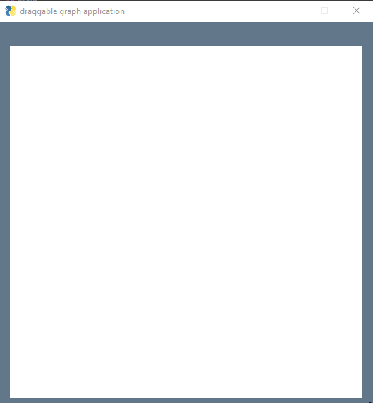
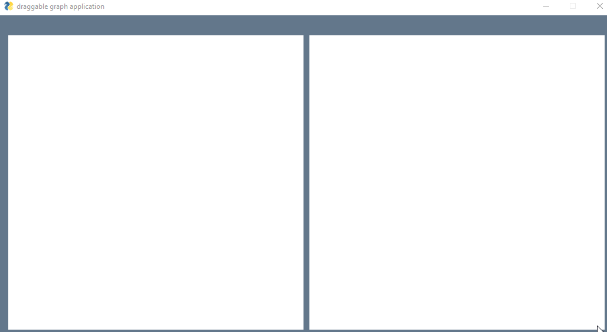
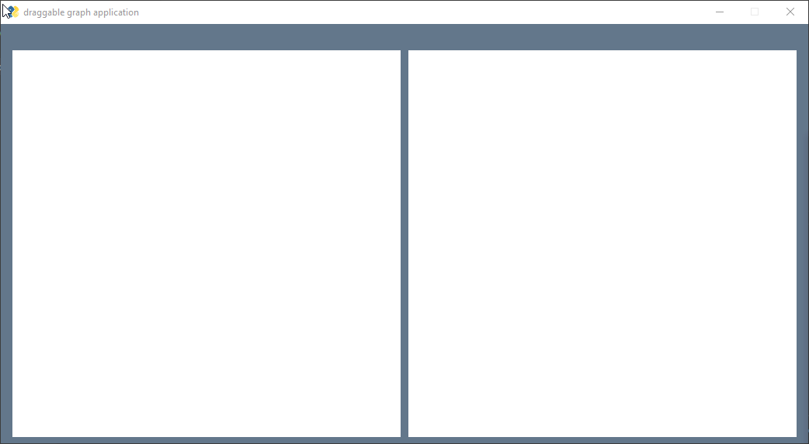
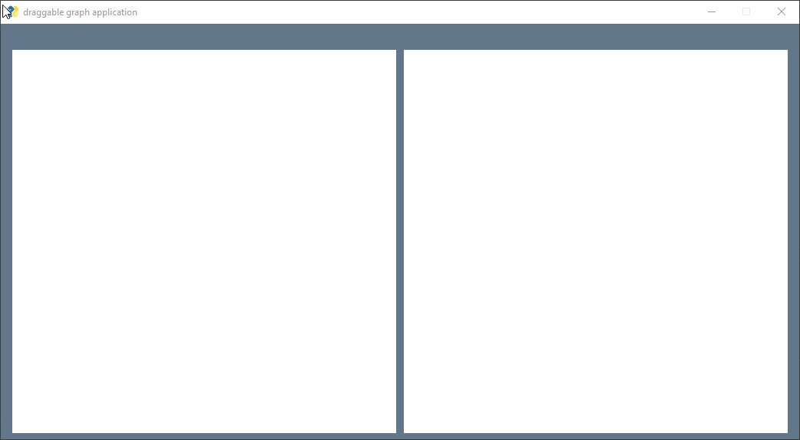
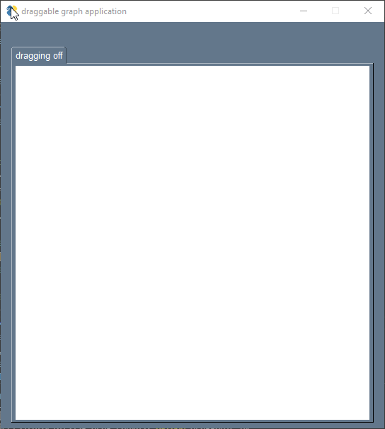
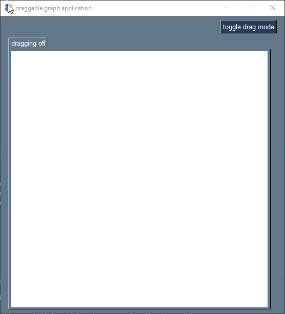
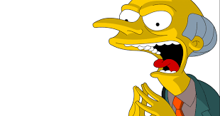

Dragging custom widgets on PySimpleGUI graph objects
In some PySimpleGUI applications using the
Graph object, we may have widgets on a certain
graph which have the ability to be selected in
order to perform certain operations. Examples of such
operations which I coded into MIMI
were:
- Change the color of the selected widget
- Delete the selected widget
- Connect selected widgets
- Change fonts
- Change font sizes
- Update text within widget
All this requires that there be
a toggling of a 'selected property' that occurs when the
user clicks on that widget. Here is a demo of a small application
which demonstrates this:

Here is the starter code for the application you see above:
import PySimpleGUI as sg
def main():
bott_left, top_right, centre = (0,0), (100,100), (50,50)
canvas = sg.Graph(
(500, 500), bott_left, top_right, key='CANV',
background_color='white',
enable_events = True,
)
output = sg.Text("", key="OUTPUT", size=(50, 1))
layout = [[output], [canvas]]
window = sg.Window('draggable graph application', layout)
# global event variables
figs = {} #key will be pysimple gui, maps to dict with 'selected' property
while(True):
event, values = window.read()
if event == "CANV":
click_location = values[event]
# for else loop being used here
for figure in canvas.get_figures_at_location(click_location):
# user clicked on present object
if figure in figs:
# toggle selected property
figs[figure]['selected'] = not figs[figure]['selected']
# just some output text to let us know something is happening
window['OUTPUT'].update(f"figure {figure} selected = {figs[figure]['selected']}")
break
# user is creating object
else:
fig_id = canvas.draw_circle(click_location, radius = 5, fill_color = 'blue')
figs[fig_id] = {'selected': False}
# just some output text to let us know something is happening
window['OUTPUT'].update(f"Just created figure {fig_id}")
if event in(None, sg.WIN_CLOSED):
break
window.close()
if __name__ == "__main__":
main()
The Problem:
An issue arises when we expect this behaviour to persist while trying to integrate
'dragging' into our application by enabling drag submits.
# main canvas
canvas = sg.Graph(
(500, 500), bott_left, top_right, key='CANV',
background_color='white',
enable_events = True, drag_submits = True # added this param
)
When this parameter is set to true, a click will fire the canvas event twice.
This then poses a problem for our toggling as it will be toggled on and then toggled
off each event handle essentially undoing the toggle after a single click. Notice
How below the event 'CANV' (the key which we passed into for our canvas/graph object)
appears twice after every 'CANV+UP' event. This is the undesired behaviour.
Note that the 'CANV+UP' event is equivalent to a mouseup event.

So now we lose this toggling of selected property behaviour and it becomes
very difficult to discern wether the user is dragging, clicking or selecting
which will in turn make our application's code more complex to handle each event.
A Solution:
Who says we need one graph? Why not have one graph for our
selecting and all those events associated with selecting, and have
another graph for dragging?
# main canvas
canvas = sg.Graph(
(500, 500), bott_left, top_right, key='CANV',
background_color='white',
enable_events = True,
)
# drag canvas - drag_submits parameter set to true
drag_canvas = sg.Graph(
(500, 500), bott_left, top_right, key='DRAG-CANV',
background_color='white',
enable_events = True, drag_submits= True
)
Now we create an event handler for when user is dragging onto our newly added drag canvas.
if event == "DRAG-CANV":
# just some output text to let us know something is happening
drag_location = values[event]
window['OUTPUT'].update(f"USER is dragging on drag canvas at {drag_location}")
Our application now looks like so:

Any figure which is created on the main canvas must obviously
be drawn onto the secondary or draggable canvas so that when the
user wishes to drag that widget they will do so for the corresponding
widget on the draggable canvas. This goes under the main canvas event handler after
the for else loop.
# create figure to be drawn onto drag canvas
drag_fig_id = drag_canvas.draw_circle(click_location, radius = 5, fill_color = 'blue')
The more subtle fact is that now any time we select a figure on the drag
canvas and do our operation with that widget (which in this case is a drag operation)
we must do so with our main widget at that location onto the main canvas. We must too
do anything that we do to our main widget to our corresponding drag widget.
We then have a one to one relationship between these widgets like so:

The simplest way we can achieve this is through a dictionary
where we map both ids to eachother.
Declare the following about the event loop:
twin_tracker = {} # maps canvas objects to drag canvas objects and vice versa
Finally after creating both figures on their respective canvases,
map both ids to eachother within our new dictionary.
# create figure to be drawn onto drag canvas
drag_fig_id = drag_canvas.draw_circle(click_location, radius = 5, fill_color = 'blue')
# map figures to eachother
twin_tracker[fig_id] = drag_fig_id
twin_tracker[drag_fig_id] = fig_id
Here is our application now:

We have already implemented one direction of this two way relationship as
when we draw an object onto our canvas it does so to both canvases.
Now we need it so when the user drags a widget on the drag canvas, it relocates its corresponding widget
on the other canvas to the location the user dragged to.
One addition to the code we have already was to add a 'location' property to the figure on main canvases'
object reference (or dictionary) when creating objects onto the main canvas.
figs[fig_id] = {'selected': False, 'location': click_location}
Now, here is the implementation of the dragging feature underneath the drag on canvas event handler
we already set up earlier:
Notice how easy it was to access the corresponding widget thanks to our twin tracker dict.
if event == "DRAG-CANV":
# drag location x and y
(x, y) = values[event]
# threshold for fig drags (hotspot)
thresh = 5
for fig_id, fig_obj in figs.items():
fig_x, fig_y = fig_obj['location']
# user is dragging this figure
if (abs(x-fig_x) <= thresh and abs(y-fig_y) <= thresh):
canvas.relocate_figure(fig_id, x, y)
drag_canvas.relocate_figure( twin_tracker[fig_id], x, y)
fig_obj['location'] = (x, y) # reset new location
break
Application after our dragging implementation.
Note that we can now toggle and drag, which is what we initally set out to do!
Fantastic.

Now that we have achieved what we initially set out to do (drag widgets on our canvas),
all that remains is to hide this double canvas implementation to our poor and confused user. Double canvases?
Which one is which? WAAAHH. Yeah, no bueno. We must hide the ugly truth in favour of a more idealized version of reality from our poor and naive user. Luckily enough PySimpleGUI makes
this super easy with the Tab and TabGroup elements, specifically thanks to the tab's visibility property which can be
easily updated. We put each canvas into their own tab, titling the tab (the first param of the sg.Tab object) appropriately.
I chose "dragging on" and "dragging off". Then we hide the "dragging on tab" by setting its visibility parameter to false.
# wrap each canvas into a tab
main_tab = sg.Tab("dragging off", [[canvas]])
drag_tab = sg.Tab("dragging on", [[drag_canvas]], visible=False) # dragging tab is invisible
# create tab group
tabs = sg.TabGroup([[main_tab, drag_tab]])
Now our application hides the double canvas implementation from our user. However at our application's current state,
we have no way of getting to our draggable canvas as it's tab is now hidden and only displays our main canvas.

We need to allow our user to go into and out of 'drag mode' in order 'flip' tabs and display its corresponding canvas.
We will do this with the use of a button.
When the user clicks this button they will enter drag_mode or exit drag_mode depending on what the said variable was prior to
clicking this button. Instead of cluttering/polluting our event handler with another global variable we will take
advantage of the metadata property that Button elements have in PySimpleGUI. This metadate property will be our drag mode variable.
# create drag mode toggler button
# set metadata parameter to false. True -> in drag mode False -> not in drag mode
mode_toggler = sg.Button("toggle drag mode", metadata=False )
Of course we must pack these newly created elements into our layout.
layout = [[output, mode_toggler], [tabs]]
window = sg.Window('draggable graph application', layout)
Finally, we need to write the event handler code for when the user toggles the drag mode.
if event == "toggle drag mode":
# toggle drag mode
mode_toggler.metadata = not mode_toggler.metadata
dragging = mode_toggler.metadata
# toggle visibility properties of tabs -- only show one at a time
window['dragging on'].update( visible = dragging)
window['dragging off'].update( visible = not dragging)
# select original canvas if not in dragging mode.
if not dragging:
window['dragging off'].select()
Here is how our application works now:

Our application is finally complete. We have not only solved the problem, but we have hidden our solution from our user
and kept their experience pleasant. If only they knew...
